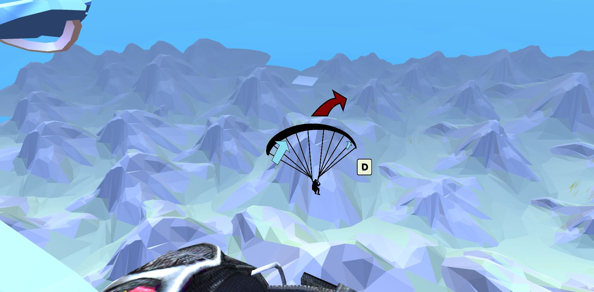
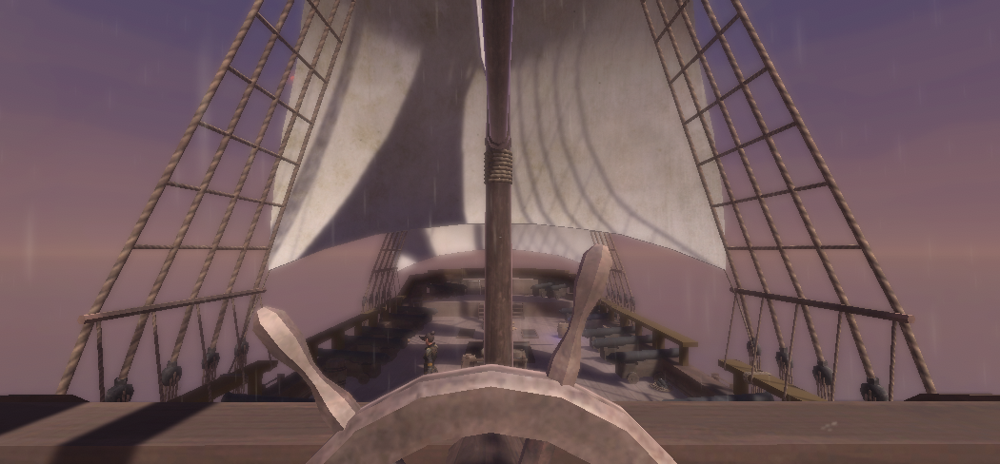
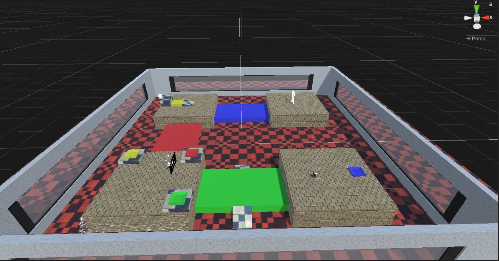
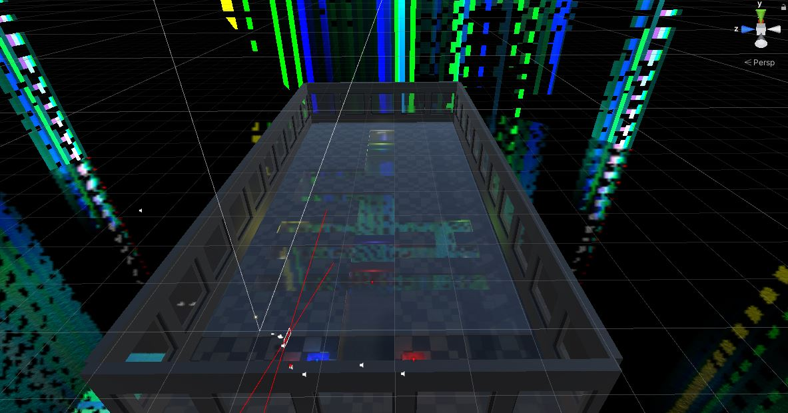
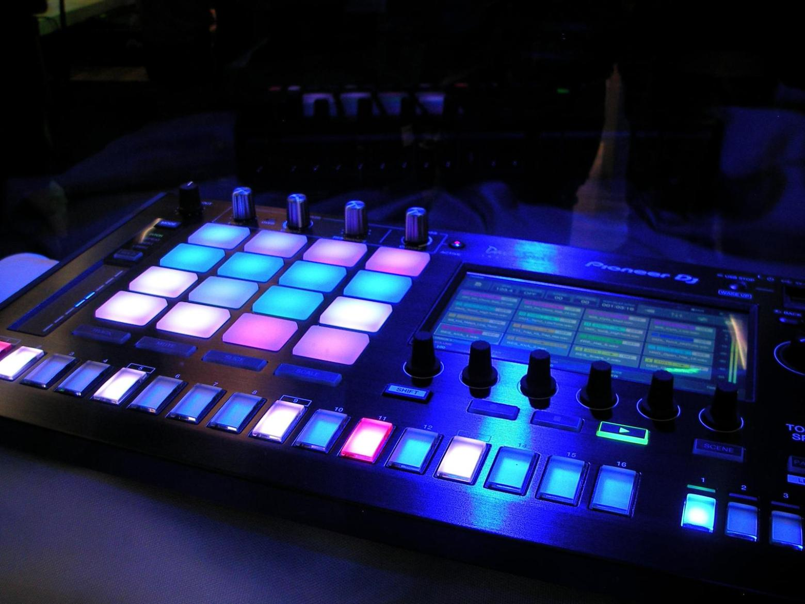
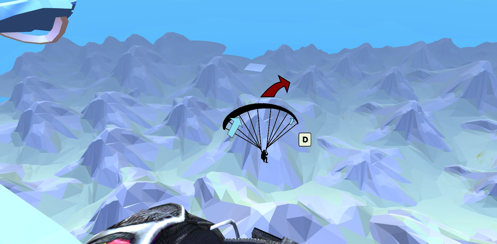
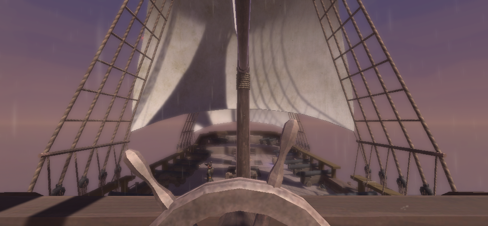
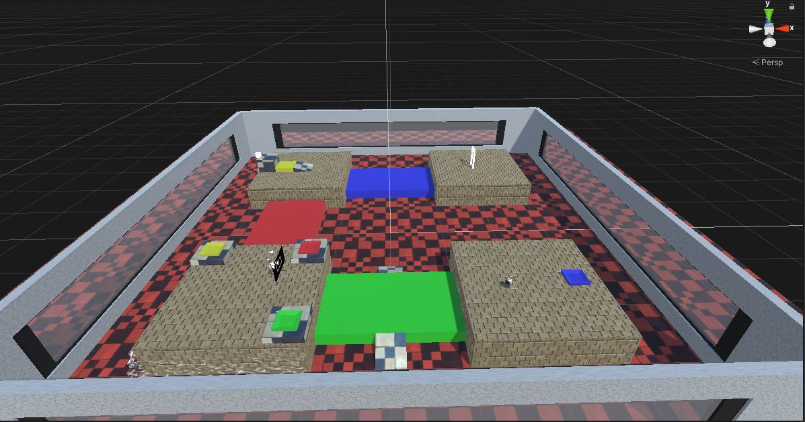
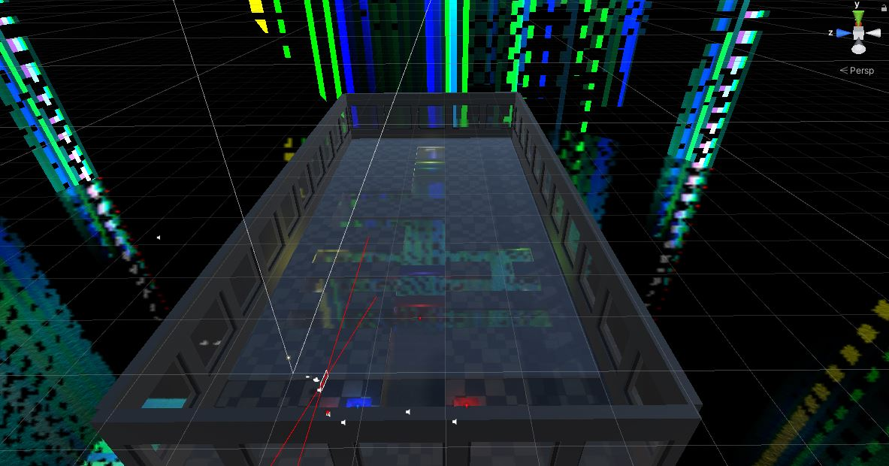
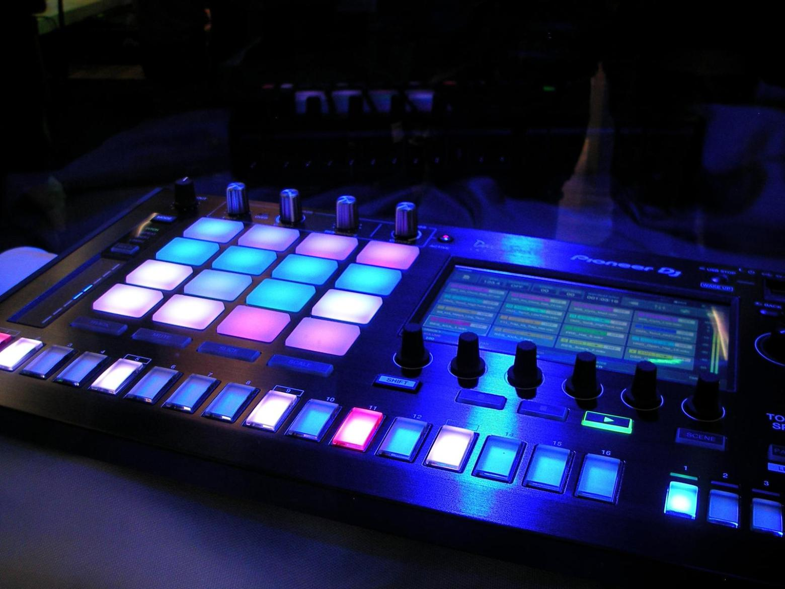

Image Gallery
Here are some screenshots (some from the editor) of the levels in our game.
   Here's Kimi's cool sound equipment he used to create the surreal soundscape of the game.
Here are some screenshots (some from the editor) of the levels in our game.
   Here's Kimi's cool sound equipment he used to create the surreal soundscape of the game.
